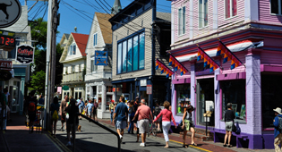

自由之路是一条穿过马萨诸塞州波士顿中心，由红砖铺成的街道，沿途有17个重要的历史遗迹。这条路长约4,023米，从波斯顿公园一直延伸到查尔斯镇的宪法号航空母舰。沿途有一些事件的简要概述牌，有著名的教堂和建筑，还有路边停靠的历史海军护卫舰。
哈佛大学位于美国波士顿附近的剑桥城，建于1636年，是全美第一所大学。美国于1776年建国，比哈佛建校要晚近140年。15世纪末，由欧洲通往美洲的大西洋航道被哥伦布开辟出来以后，欧洲人纷纷远涉重洋来到美洲。17世纪初，首批英国移民到达北美，在那里开拓自己的“伊甸园”——新英格兰。移民中有100多名清教徒，曾在牛津和剑桥大学受过古典式的高等教育，为了让他们的子孙后代在新的家园也能够受到这种教育，他们于1636年在马萨诸塞州的查尔斯河畔建立了美国历史上第一所学府——哈佛学院。1780年，即美国建国后的第四年，已经有了140多年历史的哈佛学院升格为哈佛大学。
麻省理工学院于1861年由一位毕业于老牌名校威廉玛丽学院的著名自然科学家威廉•巴顿•罗杰斯创立。他希望能够创建一个自由的学院来适应正快速发展的美国。由于南北战争，直到1865年MIT才迎来了第一批学生。随后其在自然及工程领域迅速发展。在大萧条时期，MIT曾一度被认为会同哈佛大学合并，但在该校学生的抗议之下，被迫取消了这一计划。1916年MIT从波士顿迁往剑桥。
波士顿著名的三一教堂位于科普利广场中央，建于1697年，高达26 公尺的尖塔是最显着的特征，玫瑰色砂岩的外观与铜雕大门曾让它风光一时。三一教堂于1885年被选为美国十大建筑之一，一百年后美国公众再次票选全美十大建筑有着悠久的历史。像所有著名的教堂一样，三一教堂庄严而肃穆，特别是那两扇高高的大门，使到这里参观的人们似乎找到了心灵的归属。
查尔斯河环绕着波士顿市，蜿蜒6英里。阳光明媚的时候，河水倒映着蔚蓝的天空，河两岸绿草如茵，有热爱运动的人们朝晚跑步不息，野鸭也成群地游曳嬉戏。波士顿孕育了哈佛和MIT两座举世的学术殿堂，而浓浓的人文情怀也从仿佛从河水中散发出来。站在联通城区与剑桥的朗费洛桥，尽收新老波士顿的历史沧桑，或登上一只小船，体会波士顿的独特风味。
波士顿人昵称她为“P-town”，三百多年前她是五月花号登陆北美并于之后签下《五月花公约》的地方，现今她是美国东海岸闻名遐迩的旅游胜地。普罗温斯敦位于科德角地区最遥远的地方，这片沙质区有着艳丽街景、精美艺术、恣意的夜生活。从这里可以乘船出海观鲸，也可欣赏海上夜景，所有能想到的玩乐方式，在这里都能一一实现。
这里是科德角最古老的村庄，这里有著名的遗产博物馆与花园，还有一座建于15世纪的老磨坊。科德角（Cape Cod） 是美国麻萨诸塞州南部巴恩斯特布尔（Barnstable）县的钩状半岛。
芬威球场是美国职业棒球大联盟波士顿红袜队的主场，是红袜球迷的聚集地，被称为“美国最受欢迎的棒球场”，也是职棒大联盟中历史最悠久的球场。从1912年开始，芬威球场主办了波士顿最心爱的棒球队比赛。这个球场的左外野本垒打墙举世闻名，有“绿色怪物”（Green Monster）的称号。
肯尼迪林荫道邀请你和你的家人来坐一场旋转木马。孩子们一定会爱上这些五颜六色的木马，开放的草坪和邻近的港湾。林荫道的旋转木马从六月到十月底，每天都等待你的到来。想一想：骑骑旋转木马，举行一次野餐，发呆闲聊，漫步在开满鲜花的花园，享受林荫道带给这个夏天的一草一木。
佛罗里达
佐治亚州
路易斯安那
马萨诸塞州
俄勒冈州
华盛顿特区
马萨诸塞州的正式名称是“马萨诸塞联邦”，中文通常简称“麻州”或“麻省”，它位于美国东北，是新英格兰地区的一部分。马萨诸塞州东濒大西洋，多优良港湾。波士顿是该州最大的城市，也是美国最古老的城市之一。而科德角绵延400英里的海岸线令此地成为最受欢迎的海滩度假区之一。
查 看 官 网>>
Freedom Trail
自由之路
自由之路是一条穿过马萨诸塞州波士顿中心，由红砖铺成的街道，沿途有17个重要的历史遗迹。这条路长约4,023米，从波斯顿公园一直延伸到查尔斯镇的宪法号航空母舰。
Harvard University
哈佛大学
哈佛大学位于美国波士顿附近的剑桥城，建于1636年，是全美第一所大学。1780年，即美国建国后的第四年，已经有了140多年历史的哈佛学院升格为哈佛大学。
MIT
麻省理工学院
麻省理工学院于1861年由一位毕业于老牌名校威廉玛丽学院的著名自然科学家威廉•巴顿•罗杰斯创立。他希望能够创建一个自由的学院来适应正快速发展的美国。
Trinity Church
波士顿三一教堂
波士顿著名的三一教堂位于科普利广场中央，建于1697年，高达26 公尺的尖塔是最显着的特征，玫瑰色砂岩的外观与铜雕大门曾让它风光一时。
Charles River
查尔斯河
从2005年开业以来，这座全世界最大的水族馆便迎来络绎不绝的游客。其精妙的布局，多形态的展区，以及丰富的海洋生物，使其成为人们心中的梦幻仙境。

Provincetown
普罗温斯敦
波士顿人昵称她为“P-town”，她是美国东海岸闻名遐迩的旅游胜地。普罗温斯敦位于科德角地区最遥远的地方，这片沙质区有着艳丽街景、精美艺术、恣意的夜生活。
Sandwich
三文市
里是科德角最古老的村庄，这里有著名的遗产博物馆与花园，还有一座建于15世纪的老磨坊。科德角（Cape Cod） 是美国麻萨诸塞州南部巴恩斯特布尔（Barnstable）县的钩状半岛。
Fenway Park
芬威球场
芬威球场是美国职业棒球大联盟波士顿红袜队的主场，是红袜球迷的聚集地，被称为“美国最受欢迎的棒球场”，也是职棒大联盟中历史最悠久的球场。
Kennedy Greenway
肯尼迪林荫道
肯尼迪林荫道邀请你和你的家人来坐一场旋转木马。孩子们一定会爱上这些五颜六色的木马，开放的草坪和邻近的港湾。林荫道的旋转木马从六月到十月底，每天都等待你的到来。
希尔顿全球酒店有着95年的历史，是备受世界尊敬的品牌。希尔顿全球酒店的“欢迎”项目，热情欢迎中国旅客，前台团队的成员能够说流利的中文，酒店提供传统中餐早餐以及宾至如归的服务。希尔顿全球在美国有3500家酒店，适合各种风格及场合，更有不同特色的子品牌酒店，给游客们一个梦寐以求的悠闲假日，领略万千世界。
查 看 官 网>>